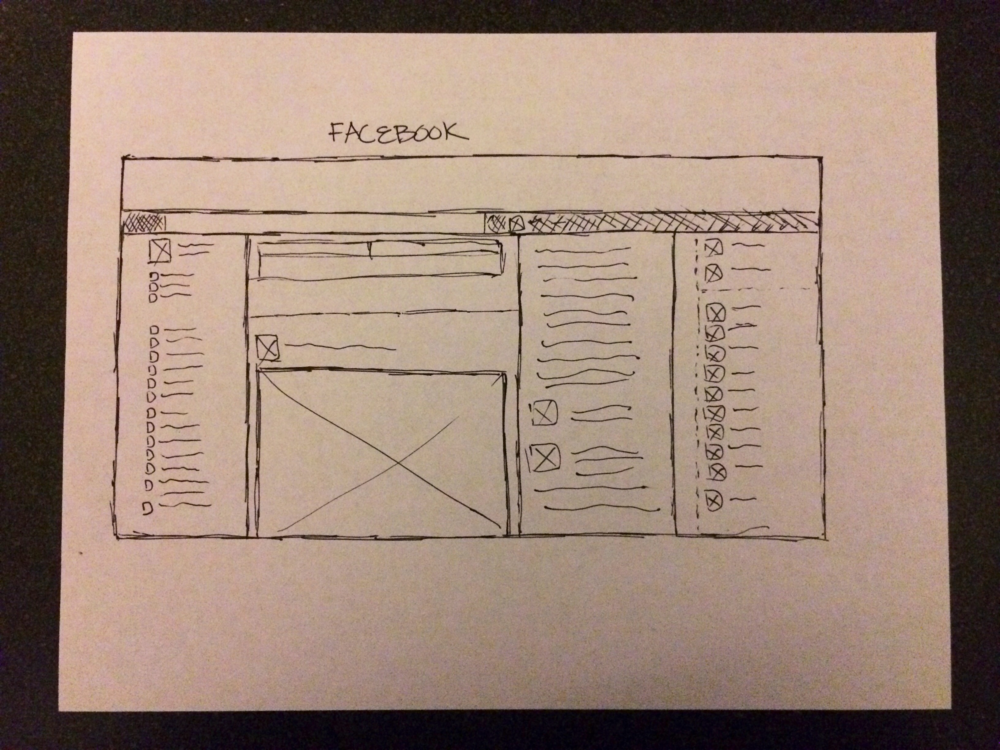
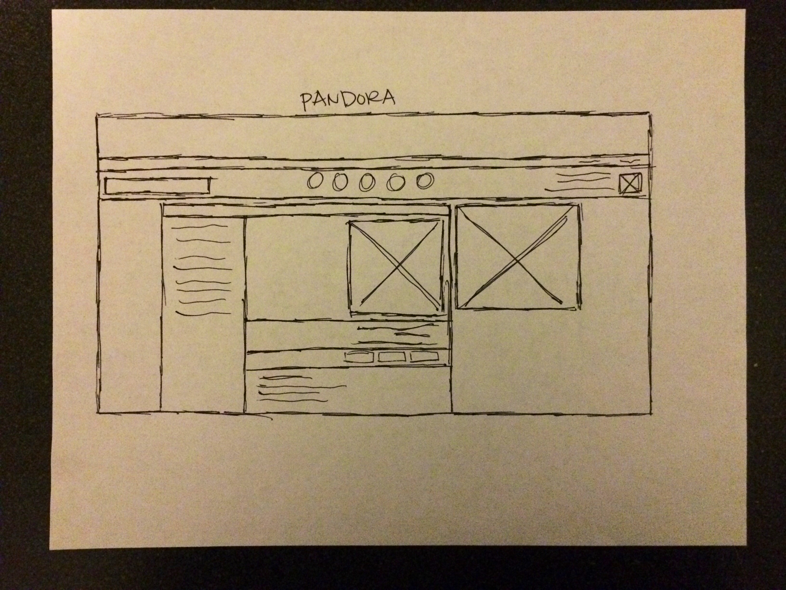
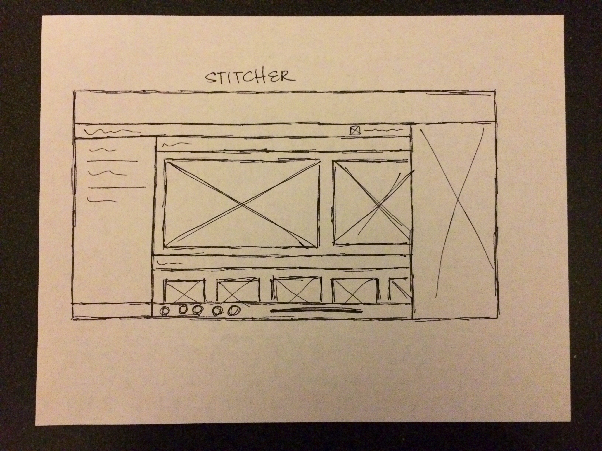

The Facebook website is good at funneling and displaying numerous user inputs while allowing easy access to it's other features such as chatting and group access.
The Pandora website is simple and straight forward. The primary buttons are up top for easy access and some album information is relayed in the center.
The Stitcher website does a great job of limited display of it's vast library but showing only a few suggestions based on your current usage.
